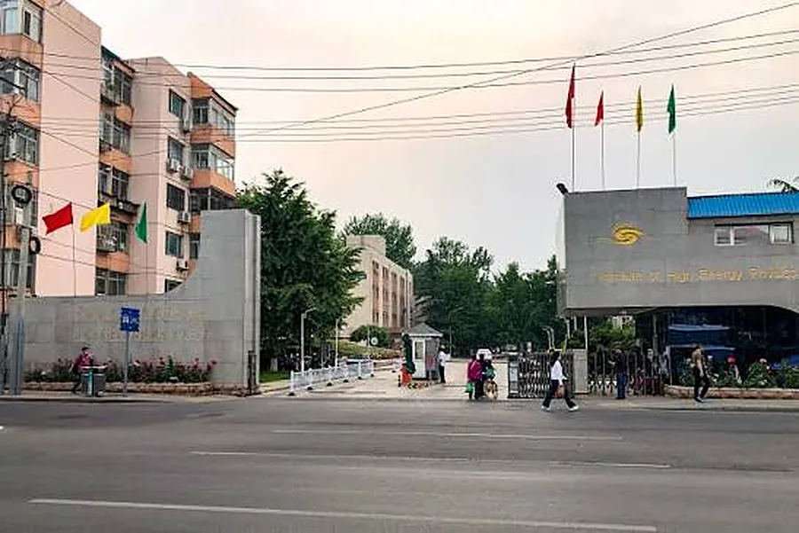
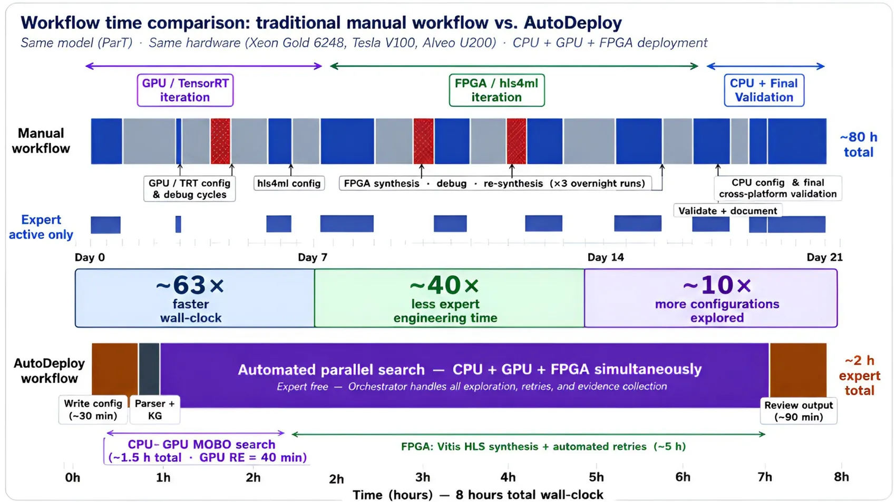
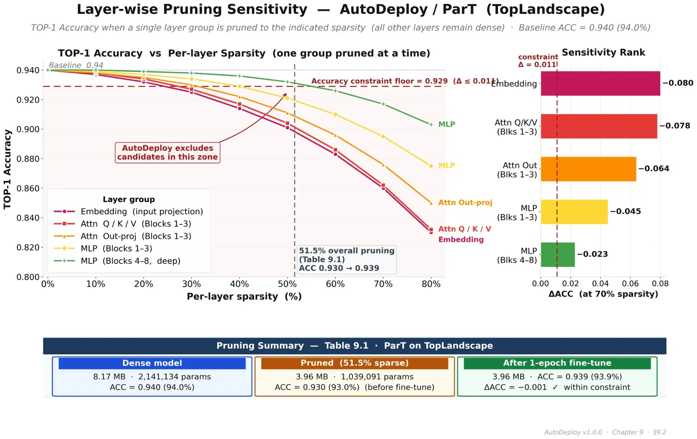
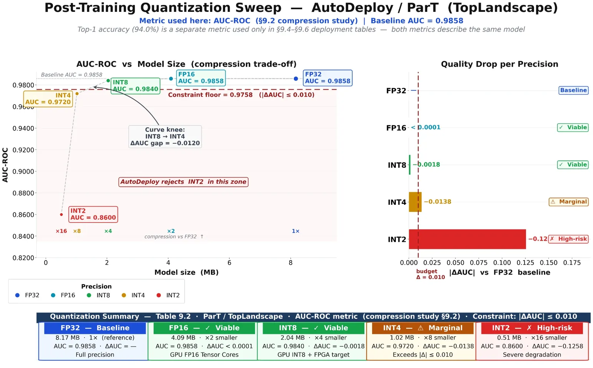

Machine Learning EngineerOpen to jobs & internships
Mustofa A. Ahmed.
Hi, I’m Hafiz.
I make AI models fast enough for the real world.
I’m a PhD student at UCAS and the Institute of High Energy Physics in Beijing. Most days I’m speeding up LLM inference or getting models to run well on GPUs, FPGAs and NPUs.
Training a model is the part everyone talks about. I like the part after it: getting that model to run fast on a real chip without breaking it. It is fiddly work, and I enjoy it more than I probably should.
01 / Results
3.03×
Faster LLM decoding
Up to 3.03× with speculative decoding in vLLM: a small drafter proposes tokens and the large model verifies them in one step.
10.4×
Faster GPU inference
Particle Transformer with TensorRT FP16 on an NVIDIA V100: 0.972 ms at batch size 1, about 10.4× the speed of the eager baseline. ParticleNet with TensorRT FP32 reached about 6.6× at 0.456 ms.
63×
Faster deployment workflow
One model across CPU, GPU and FPGA: about three weeks by hand, about eight hours with AutoDeploy, using roughly 40× less expert time.
GPU · FPGA · NPU
One workflow, many chips
Evaluated on Intel Xeon, NVIDIA V100 and Xilinx Alveo U200, with Huawei Ascend NPU work alongside.
6
Research papers
Five published, three of them as first author, with 25 citations so far. The sixth, also first author, is submitted to IEEE CSCWD 2027.
02 / Tailor this page
What are you hiring for?
Pick the role you’re hiring for and I’ll point you to the work that matters most for it.
Built a DSpark-capable vLLM runtime and fixed model-loading, hybrid-attention and CUDA Graph issues at Zidong Taichu, then benchmarked on GSM8K, HumanEval and MT-Bench.
Quantization (PTQ, QAT), pruning, TensorRT, ONNX and hls4ml. On GPU, AutoDeploy reached about 10.4× for Particle Transformer and 6.6× for ParticleNet, and compression took ParT from 8.17 MB to 1.02 MB with under 0.7 points of accuracy lost.
Built AutoDeploy, about 200k lines of Python: a parser, a Neo4j knowledge graph, a recommendation engine and a sandboxed orchestrator that take one model across CPUs, GPUs and FPGAs.
Six papers, five published and three of those as first author, including Bayesian optimization of triggerless GRB detection for LHAASO-WCDA, which reached 11.5σ on GRB 221009A. Also hands-on with GNNs (HGT, TGN) and reinforcement learning.
Reproduced DFlash and DSpark speculative decoding for Qwen3.5-4B and built a DSpark-capable vLLM runtime.
Fixed model-loading, hybrid-attention and CUDA Graph issues, then benchmarked on GSM8K, HumanEval and MT-Bench (RTX 4090).
vLLMPyTorchRuntime integrationGPU benchmarking

Research Fellow
2023 – PRESENT · BEIJING
Computing Center, IHEP, Chinese Academy of Sciences
ML deployment for the particle-physics experiments CEPC and CMS (CERN): ParticleNet and ParT on TensorRT and ONNX.
Built AutoDeploy and its deployment knowledge graph, and trained DFlash drafters for vLLM serving studies.
Worked with the LHAASO-WCDA team on triggerless gamma-ray burst detection using Bayesian optimization.
TensorRTONNXParticleNetParTNeo4jLHAASO
Web Developer
2021 – 2022 · YANGZHOU
GeePower Energy Technology
Built the full-stack company website, including database design and query optimization.
04 / Flagship project · Master’s thesis
Read
Remember
Plan
Run
Deploy
Learn
AutoDeploy
My master’s thesis. You give it one model and one config file. It plans, runs and checks the deployment on CPU, GPU and FPGA, and remembers every attempt for next time.
~63×faster, start to finish
~40×less expert time
~10×more setups tried
↓ Scroll to follow one model through the six steps.
1 / 6
Read the model
Like a mechanic’s inspection: 13 automatic checks look at the model and the machine, then write one short report, the StateContract, that the planner can trust.
13automatic checks
10.58 sonce per model
2 / 6
Remember what worked
Every past attempt, good or bad, lives in a knowledge graph. A new model starts from similar past runs instead of from zero. Node names come from my real Neo4j database.
0.58 → 0.76right picks in the top 5
14% → 8%bad suggestions
3 / 6
Plan the best options
Four planners suggest complete deployment recipes. Each dot is one recipe: further left is faster, higher is more accurate. Recipes that break a hard rule are dropped before they cost anything.
40 minvs 95 min, random search
0.45 msvs 0.68 ms, random search
4 / 6
Run, check, repair
Each step runs in a sandbox and is checked before the next one starts. If a step fails, AutoDeploy repairs it, swaps the tool or rolls back. Each square is one real step from the evaluation.
~320steps run
88%finished, some after a repair
5 / 6
One workflow, many chips
The same config deploys to a CPU, a GPU and an FPGA with no hand-written code for each. On the V100 it picked tuned FP16 over INT8, because Volta’s Tensor Cores only speed up FP16.
0.45 msGPU, measured
72 µsFPGA, HLS estimate
6 / 6
Learn from every run
Every result flows back into the graph, so the next deployment starts smarter: fewer tries and fewer dead ends.
8 → 2tries before the first working setup
35% → 8%setups that fail
Warm-start values are partially estimated in the thesis.
AutoDeploy lab · Real thesis numbers
Try AutoDeploy yourself.
The problem it solves: one trained model, one chip, and many ways to run it. Some are fast, some keep more accuracy. Pick a chip and how much accuracy you can give up, then start the race. AutoDeploy picks the fastest setup that stays within your limit. The model is ParT, which classifies particle jets in collider data, and every number is a real measurement from my thesis.
1
Pick a chip
2
How much accuracy can you give up?
The model starts at 94.0% accuracy.
3
Replays a real run, failure and all.
SetupSpeed per inference · longer bar is fasterAccuracy
Read the model (13 checks)
Look up similar past runs
Plan candidate setups
Run each step in a sandbox
Race them on the chip
Save the result to the graph
For engineers: the raw log and the JSON contracts
Subsystems only talk through versioned JSON contracts like these, so every run can be replayed from its logs. Excerpts from Appendix A of the thesis.
The 10.4× headline on this page is a separate benchmark: TensorRT FP16 at 0.972 ms against the eager baseline. This lab uses the thesis evaluation tables.
05 / More selected work
More things I’ve built.
Keep scrolling. Most of these are live, so click around and try them.
→
Speculative decoding playgroundLIVE
Target model only
With a drafter
2.1×toy speed-up
5best draft length here
Toy model for intuition, not measured data: draft too little and you waste the drafter, draft too much and rejected tokens cost you.
LLM inference
Speculative decoding
Up to 3.03× faster decoding
DFlash, DSpark and MTP in vLLM. I trained a 3-layer DFlash drafter and studied how the proposal budget trades speed against wasted work.
WCDA event display
showers kept0 / 0
Listening to noiseSimulated events on the real 3,120-PMT layout. Click to fire a shower, hover to read a PMT.
Astroparticle physics · CHEP 2024
Finding gamma-ray bursts in noise
11.5σ on GRB 221009A
LHAASO-WCDA has 3,120 PMTs in three water pools (1,320 + 900 + 900), each firing at about 35 kHz. A trigger throws away faint showers, so I used Bayesian optimization to tune a triggerless detection algorithm, revealing gamma rays below 100 GeV that trigger methods could not see. Switch between the two modes above.
Precision
8.17 MBmodel size, measured
93.998%accuracy, measured
LUT74%
FF46%
BRAM65%
DSP85%
Hardware acceleration
Transformers on FPGAs
8× smaller, 0.65 points lost
Compressed the Particle Transformer with pruning and quantization, then mapped its attention, softmax and normalization blocks onto Xilinx FPGAs with hls4ml. Pick a precision: sizes and accuracies are my measurements, and packets get thinner as bits drop. Hover a block to see what it does. The bars show post-synthesis use on an Alveo U200 for the AutoDeploy-selected design.
ModelToolTechniqueHardware
Drag a node. A simplified view of the AutoDeploy graph.
Graph learning
Knowledge graphs & GNNs
8 → 2 configs to first viable
AutoDeploy’s memory: a Neo4j graph of models, techniques, tools and hardware, with HGT and TGN graph learning. As evidence accumulates, invalid configurations fall from 35% to 8%.
CuriosityHermes Agent · running locally
Hermes Agentagent
model
runtime
Ollamaruntime
NVIDIA V100GPU
A scripted replay of how a request flows, not a live connection to my assistant. Tap a request to send it.
Personal research project · In progress
Curiosity
Hermes + llama.cpp / Ollama + Qwen
A personal AI I’m building to remember what I’m working on, notice what needs attention and help without being asked, within limits I set. Phase one runs locally: Hermes Agent orchestrates, and llama.cpp or Ollama serves Qwen3.8-27B. It is also my testbed for a bigger question: can a small model get much smarter through better memory and design, instead of more parameters?
Also shipped
SECHAESP32 home automation for developing countries, my published bachelor’s thesis.
Synchrotron compressionFast lossless image compression with deep learning.
Also in my toolkit: model scaling and foundation-model learning curves, including how model size, training data and training duration shape learning, generalization and bottlenecks.
SECHA: A Smart Energy-Efficient and Cost-Effective Home Automation System for Developing Countries
Mustofa, Dagnew, Gantela, Idrisi. Journal of Computer Networks and Communications.
First authorDOI ↗
Talks and workshops
2026
17th FCPPN/L Workshop
Talk: AutoDeploy, a toolkit for HEP ML deployment
Lyon, France↗
2026
Quantum Computing and Machine Learning Workshop
Participant
Sun Yat-sen University, Shenzhen↗
2024
CHEP 2024
Talk: optimizing triggerless GRB analysis for LHAASO-WCDA
Kraków, Poland↗
2024
International Workshop on the High Energy CEPC
Participant
Hangzhou, China↗
2024
Quantum Computing and Machine Learning Workshop
Talk: enhancing GRB detection for LHAASO-WCDA
Jilin University, Changchun↗
08 / Education
University of Chinese Academy of Sciences · IHEP
PhD, Computer Application Technology
2026 – present
University of Chinese Academy of Sciences · IHEP
M.Eng., Computer Application Technology
2023 – 2026
Yangzhou University
B.Sc., Microelectronics Engineering
2019 – 2023
09 / Awards
2026CSC Chinese Government Scholarship
2026IHEP Director’s Award, Best Graduation Project
2023ANSO Scholarship for Young Talents
2021Yangjie “Excellent Student” Scholarship
10 / Beyond the code
What I make for fun.
When nobody is asking, this is what I build: digital humans, Unreal Engine worlds and songs with AI voices.
MetaHuman design · Unreal Engine 5
A digital human I designed.
Keep scrolling. The camera moves in.
Skin, brows and lashes hold up, all the way to the eye.
Unreal Engine 5 · Game project
Worlds you can walk through.
My Unreal Engine game: environment design, interactive scenes and digital characters. Click a scene to enlarge it.
Music videos and AI songs · Personal hobby
Songs I make with AI voices.
A hobby of mine: when a topic is close to my heart, I turn it into a song. The idea, the story and the final cut are mine. Every voice and instrument you hear is AI-generated. No human singers, no microphone. These are a few samples.
Idea, story, directionMe
LyricsReMi · AI
Voices and musicChirp · AI, no human singers
Timed lyricsGladia · AI
Video editMe
Press play below: this line becomes the live waveform of a voice that never existed.
3songs to play here
2music videos
3AI models in the chain
0human singers
01
ReMi
Generates the lyrics.
你的故事有人在听When the silence
02
Chirp
Turns lyrics into audio.
03
Gladia
Turns the MP3 into timed lyrics.
04:11 When the silence04:37 你的故事有人在听
04
Lyric video
I cut the final video.
Music video · AI vocals · my story
A song for Xiao Mi
A Chinese AI-generated music video made to comfort a close friend.
Music video · AI vocals · my story
For Palestine
An AI-generated music video I created for Palestine.
The songs, all sung by AI
Lion of My Chest AI vocals
0:00
Fire in the Rubble AI vocals
0:00
River to Sea AI vocals
0:00
On a desktop, the particles behind the page breathe with the music.
A tool that takes one trained model, finds the fastest safe way to run it on CPUs, GPUs and FPGAs, and remembers what it learned for next time.
10.4×faster on GPU (TensorRT FP16, 0.972 ms, vs eager baseline)
~63×faster end-to-end workflow
~40×less expert engineering time
~200klines of Python
The problem
Training gets the attention, but deployment takes the calendar. Toolchains are fragmented across CPUs, GPUs, FPGAs and NPUs, knowledge stays with individuals, and each attempt repeats the last one’s mistakes. In high-energy physics the bar is even higher: CMS Phase-2 targets a 12.5 µs hardware-trigger latency at 750 kHz.
The system
Parser13 analyzers turn a model and its environment into a typed StateContract.
Knowledge graphNeo4j memory of models, techniques, tools, hardware and outcomes, with HGT and TGN learning.
Recommendation engineRetrieval templates, Rainbow DQN, a GFlowNet sampler and multi-objective Bayesian optimization.
OrchestratorRuns plans in sandboxes with gates, checkpoints and rollback, then feeds evidence back to the graph.
The 10.4× headline is TensorRT FP16 at 0.972 ms against the eager baseline. These tables are the thesis evaluation, a separate benchmark with its own baselines: on GPU, tuned FP16 reaches 0.45 ms against 3.80 ms for PyTorch FP32.
CPU Intel Xeon Gold 6248
ms
inf/s
Acc.
PyTorch FP32 (1 thread)
45.2
22
94.0%
PyTorch FP32 (20 threads)
12.8
78
94.0%
AutoDeploy (ONNX Runtime)
8.6
116
94.0%
GPU NVIDIA Tesla V100
ms
inf/s
Acc.
PyTorch FP32
3.80
263
94.0%
TensorRT FP16
0.82
1,219
93.7%
TensorRT INT8 (PTQ)
0.51
1,961
93.4%
AutoDeploy (tuned FP16)
0.45
2,222
93.5%
FPGA Xilinx Alveo U200, estimated
µs
inf/s
Acc.
Manual best
78
12,500
92.1%
Vitis AI INT8
85
11,760
92.3%
AutoDeploy
72
13,890
93.0%
FPGA values are HLS C-synthesis estimates, not on-board measurements. CPU and GPU values were measured on the board.
The result that surprised me: on the V100 the best choice was tuned FP16, not INT8, because the GPU’s Tensor Cores accelerate FP16. A fixed recipe would have missed it.
Three weeks to eight hours
The same deployment across all three platforms took about 80 hours of expert work over 21 days by hand. AutoDeploy took 8 hours of wall-clock time and about 2 hours of expert time, and explored about 10× more configurations.

It gets better with use
8 → 2configs to first viable
35% → 8%invalid configurations
0.52 → 0.45 msbest-discovered latency
Inside the system
Figures from the thesis, the real command line and the live knowledge graph. Click any figure to enlarge it.
Make a large model generate faster by letting a small one guess ahead, then measure honestly when that actually helps.
3.03×faster decoding, at best
3methods: DFlash, DSpark, MTP
3benchmarks: GSM8K, HumanEval, MT-Bench
What I did
Reproduced DFlash and DSpark for Qwen3.5-4B and built a DSpark-capable vLLM runtime.
Fixed the integration problems that block real use: model loading, hybrid attention and CUDA Graph compatibility.
Trained a 3-layer DFlash drafter for serving studies at IHEP.
The question that matters: how far to draft?
Longer drafts can skip more steps, but rejected tokens are wasted work. So I measured draft acceptance, scheduler behavior, latency, throughput and answer correctness across draft budgets. Internship benchmarks ran on an RTX 4090, and later IHEP experiments use an RTX 5090.
That study became a paper submitted to IEEE CSCWD 2027: “Draft-budget trade-offs in block-parallel speculative decoding”.
LHAASO-WCDA · EPJ Web of Conferences, CHEP 2024
Finding gamma-ray bursts in noise
Bayesian optimization of a triggerless detection algorithm, tested on GRB 221009A, one of the brightest gamma-ray bursts ever recorded.
11.5σsignificance in triggerless data
<100 GeVgamma rays revealed, previously undetectable by trigger methods
3,120PMTs in 3 pools: 1,320 + 900 + 900
330M+hits in a file of about 10 s
The LHAASO observatory, and an illustration of an air shower reaching the water pools.
The problem
Each WCDA channel fires at about 35 kHz, mostly from low-energy cosmic-ray background. Normal triggers throw away the faint low-energy showers that a gamma-ray burst can produce. In triggerless mode, every hit around a burst alert is kept, and the signal then has to be found offline in hundreds of millions of hits.
The method
Find the plateauA gamma-ray shower front is close to a plane, so hit times projected along it pile up into a plateau that noise does not form.
Measure significanceCompare ON and OFF sky regions with the Li-Ma formula, using guard rings to reject false positives.
OptimizeEach evaluation is expensive and noisy, so Bayesian optimization tunes window size, plateau width and minimum hits, with caching to avoid repeated runs.
ClusterDensity-based clustering with DBSCAN and OPTICS helps separate signal from background.
Try Bayesian optimization yourself
A real Gaussian process runs in your browser. Each click spends one expensive evaluation where expected improvement is highest. Watch how few it needs to find the peak.
0evaluations · best–
Illustrative objective, not LHAASO data. Gold dots are evaluations, the band is uncertainty, and the lower curve is expected improvement.
Getting attention-based physics models into microsecond-scale, low-power hardware takes three things: simplifying the architecture, compressing the model and building the blocks in hardware.
8×smaller at 4-bit (8.17 → 1.02 MB)
51.47%weights pruned, with 93.936% accuracy after fine-tuning
72 µsestimated ParT latency on Alveo U200
Compression, measured
Weights
Model size
Accuracy
32-bit
8.17 MB
93.998%
8-bit
2.04 MB
93.986%
4-bit
1.02 MB
93.352%
2-bit
0.51 MB
64.687%
8-bit costs almost nothing. 4-bit is the sweet spot. At 2-bit the model falls apart. Pruning was done layer by layer, guided by parameter distributions, weight distributions and sensitivity scans, because pruning every layer equally hurts accuracy.
Attention in hardware
ParT adds pairwise particle interactions to multi-head attention as a bias before the softmax. With hls4ml I implemented that block as a multi-stage pipeline of linear layers, matrix multiplies and a softmax built from exponential lookup tables, along with layer normalization.
From the thesis

Which layers can be pruned, and how far.

Quantization: where accuracy holds and where it breaks.
ParticleNet on a Xilinx U200
Latency
Power
Speed-up
Accuracy
ParticleNet
15 ms
35 W
2.22×
~93.3%
Static ParticleNet
3.13 ms
9 W
5×
~93%
About 70% of the runtime was in convolution-like operations, so those moved into the FPGA kernel, and Static ParticleNet keeps KNN and edge features only in the first EdgeConv block.
llama.cpp
Personal research project · In progress
Curiosity
A personal AI that remembers, notices what matters and learns over time. And my testbed for one question: can a small model get much smarter through better memory and design, instead of more parameters?
Localruns on my own GPUs
27BQwen3.8, open weights, today
32 GBa V100 and an RTX 4090 to share
1 / 7phases, the first in progress
Honest status: most of this page is the plan. Phase one, a local assistant on Qwen, Hermes Agent and llama.cpp or Ollama, is what I’m building now.
Why not just another chatbot?
A typical assistantCuriosity
MemoryForgets when the chat endsKeeps what matters for weeks and months
InitiativeWaits to be askedSpeaks up when something needs attention, otherwise stays quiet
ContextSees one messageKnows the projects, deadlines and people behind it
LearningThe same tomorrow as todayGets better from what worked and what didn’t
Its picture of my world
Not a pile of chat logs: a graph of people, projects, deadlines and events that grows over time. Click a node to see why it believes what it believes.
Illustration of the planned world model. Each fact keeps its source, time and confidence.
The parts, around one model
Open-weight modelthe fixed engine
Five kinds of memory
Workingseconds to minutesthe task in front of it
Episodicdays to monthswhat happened, what was decided, what came of it
Semanticmonths to yearspeople, projects, preferences, facts
Proceduralreusableskills and workflows that worked
Identity and goalsyearsprinciples, interests, long-term aims
The loop it runs
ObserveUnderstandPlanActEvaluateLearn
Before acting, it should predict what the action will change.
A day, eventually
Your CEPC talk is Friday. Here are last week’s slides and the two comments you never answered.
The training run failed twice with the same CUDA error. Last month the fix was a smaller batch. Try that?
A new paper on draft budgets came out today. It tests the setting your study left open.
Paper due in three days. Two experiments are unfinished, and one is waiting on the V100.
Nothing urgent. It writes today into memory and lets you sleep.
Where it is heading, not what it does today. It only acts within permissions I give it.
The question underneath
Can a constrained model become much more capable through better memory, representations and planning, without growing in proportion?
Outside the model
Memory, tools, planning and checking around a fixed model. Achievable now, and measurable.
Inside the model
Better ways for the model itself to learn, consolidate and adapt. The deeper research direction.
I test each component against a baseline, so a system that only remembers more is never counted as one that learned more.
What it runs on
Hermes Agentorchestration
open-weight model
local serving
Ollamalocal serving
V100 32 GB · RTX 4090the GPU budget
Roadmap
1Local AI foundationnow
2Persistent memorynext
3World model and goalsplanned
4Tools and proactive helpplanned
5Architecture experimentsplanned
6Continual learningplanned
7Toward adaptive intelligencelong term
Rules it is built on
Local firstEvidence for every factHelpful, not noisyMeasured, not assumedExplains its decisionsWithin my permissions